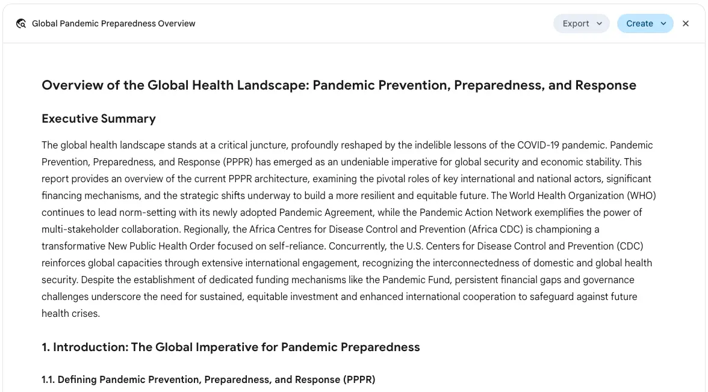
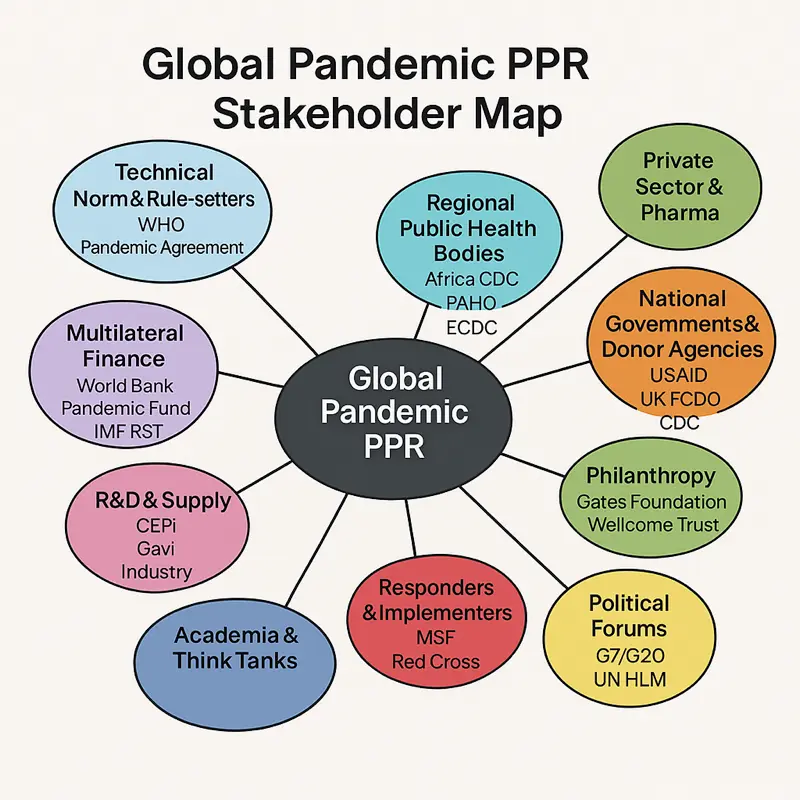
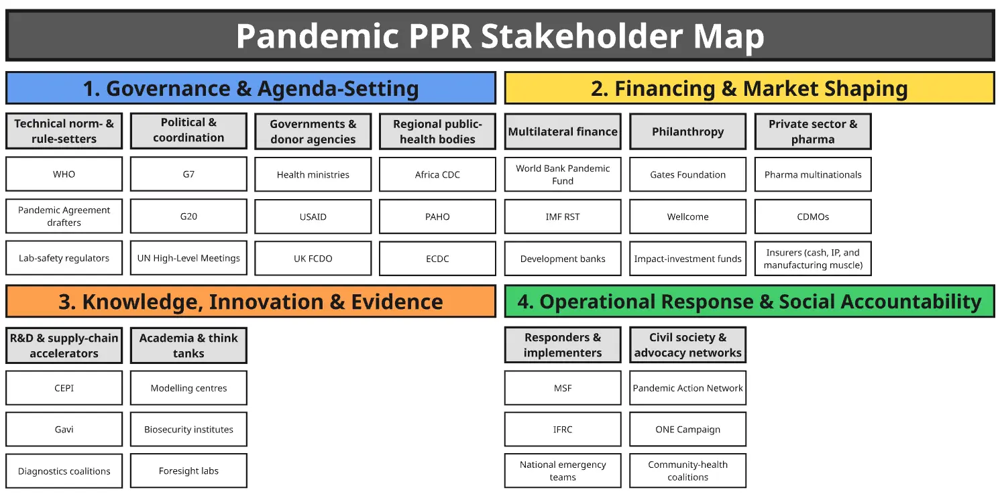
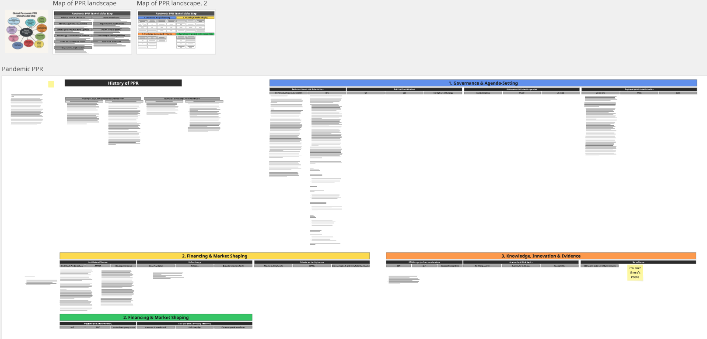
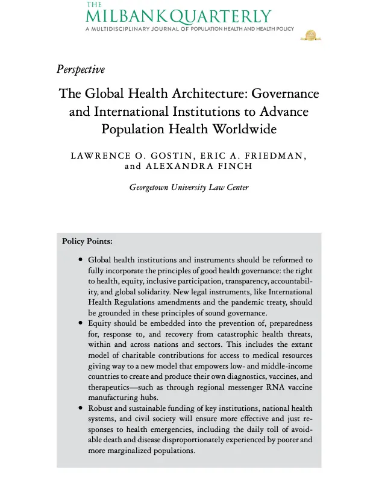
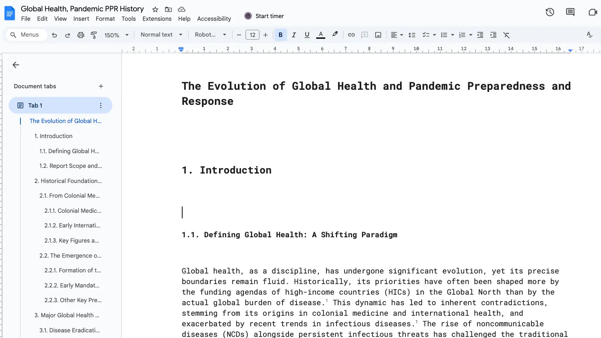

Day 3 → answering open questions
- I feel torn between learning more, orienting more deeply, and applying
- I definitely don’t feel like I have a deep understanding of what they’ve done yet, because my model of e.g. how the WHO works, what the Pandemic Fund is, is poor
- I think spending a third day getting to grips with stuff here, and making flashcards, will make me much more fluent in these topics if I get an interview
- I’m a little worried that they’ll take the listing down soon as it’s been up for ages. But you’d think that p(them taking it down in the next day or two) would be low…
Open questions/things I don’t grok yet:
- Writing up my post-it notes from here
1. Learning basics/getting scaffolding
- What actually is civil society? Just a basic definition would be useful, and some key examples
- What does PPR stand for, want to lock this in. Pandemic Preparedness and Readiness?
- I know barely anything about the WHO!
- What are global public goods?
- Learn more about “all global health initiatives”, including Gavi, Global Fund, WHO, etc
- “This also entails ensuring all global health initiatives, including Gavi, the Global Fund, WHO, and the Pandemic Fund, are fully financed”
- I don’t really know what e.g. a Think Tank is/does. I mean, I have a guess (they work on policy?), but it’d be great to double check this and learn about some quintessential examples (Adam Smith Institute?)
- “COP-like” - quickly learn about COP
- PAN advocates for a “COP-like” process for pandemics, which would institute annual accountability mechanisms to hold global leaders responsible for preparedness
- “Panic & neglect” - who first came up with this term? Does it just apply to pandemic preparedness?
2. Learn more about the specifics of PAN
- I’d like to make a quick org chart just to get a better sense of what teams exist
- Lock in their key strategic pillars
- Advocacy for Equitable Access to Pandemic Tools
- Driving Global Summits and High-Level Political Engagement
- Role in the Establishment and Funding of the Pandemic Fund
- Engagement in the Pandemic Instrument Process
- Promoting Accountability and Cross-Sectoral Collaboration
- Targeted Programs
- Lock in their key strategic initiatives
- Pandemic Action Ambassadors
- From the Frontline
- Vaccine Education
- COVID-19 Action Fund for Africa (CAF-Africa)
- Mask Behavior
- Resilience Action Network Africa (RANA)
- Newsletter, weekly calls
- Shift overton window re: security sector arguements
3. Learning more about initiatives/stakeholders
- What is the Pandemic Fund? Who is involved? Etc
- What summits have PAN helped organise? How did they contribute?
- What pandemic agreements were PAN involved with?
- Who is working on a holistic pandemic agreement? Who are the stakeholders here?
- Pandemic Agreement by WHO member states - what it involves
- Broader financial reforms (e.g., Multilateral Development Bank reform)
- CAF-Africa
- In 2020, CAF-Africa was the fifth largest procurement mechanism for PPE in the world. Between June 2020 and March 2022, CAF-Africa:
- Africa CDC’s New Public Health Order
- The Elders?
- UNGA?
- Resilience & Sustainability Trust
- “Expert commission to cost climate & pandemic-resilient health systems”
- Africa Epidemic Fund
- “global-public-investment model”
- MDB reforms
- “One-Health based pandemic agreement”
4. Learning technical stuff
- What are ODA promises?
- What are IHRs?
- What is the debt common framework?
- What are SDRs?
- How do you strengthen LMIC leadership roles in the Pandemic Fund?
- Learn more about RANA
- ACT-A?
- “Equitable successor to ACT-A”
- IDA-21?
- MFF hub
- Resilient debt clause
- ODA
5. Specific disease responses
- mpox
- H5N1
- COVID
An overview of the global health landscape would be very useful for scaffolding
Gemini deep research prompt
please make an overview of the global health landscape, with a focus on Pandemic Prevention, Preparedness, and Response
I want an overview of the key players (e.g. WHO, pandemic action network)
things like funds, RANA, Africa CDC's New Public Health Order, the CDC, etc

- ☝️ I love deep research so so much
- Ah, I shouldn’t have specified orgs as examples, as it over-indexed on them
- So I also asked ChatGPT o3:
who are the key players in global health & pandemic PPR?
- And got a very useful answer
Map of PRR
What would a map of this space look like? I'm imagining there are categories of stakeholders, like... financers (world bank), international organisations (WHO), private sector, etc
I currently don't have a good map in my head, I don't know what the different stakeholder types are called

- ChatGPT made this - looks non-hallucinatory to me! Great starting point
- My version 👇

- Much better IMO as it has grouping, rather than just “here are 11 things, good luck”
- I also picked the colours vaguely based on Ken Wilbur’s spiral dynamics framework, lol. Nerd easter egg


- Realising I’d like to get an overview of the history of global health, in the same way that I did when I was learning about the nuclear space
- Really useful to have a narrative overview of what happened when, what the key innovations have been, etc
- Deep research to the rescue
please make a report on the history of global health & pandemic PPR
- Will read with Speechify and then feed into AI to make flashcards, skip the Miro stage
- See Global Health flashcards from day 3